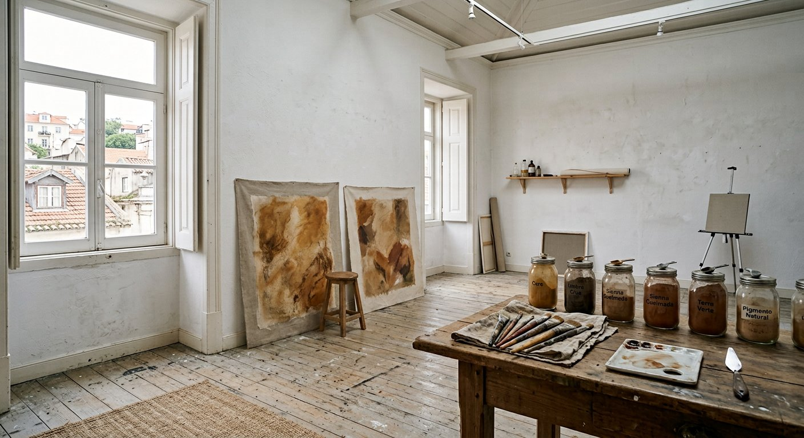

Inês Languel
Languel
Selected worksAbout
Inês Languel (b. 1988, Évora) lives and works in Lisbon. She paints with oil, gathered earth pigment, and graphite on linen.
The work is slow. Surfaces are stained, left, returned to. Colour arrives the way weather does — by accumulation. Recent paintings attend to the mineral ground of the Alentejo and to the interval between one season and the next.

Selected exhibitions
-
2025
Interval Galeria Vera Cortês, Lisbon
-
2024
Low Sun The Approach, London
-
2023
Studies for a Quiet Room Kunsthalle Lissabon
-
2022
Ochre Galeria Francisco Fino, Lisbon
-
2021
After Rain (two-person) Madragoa, Lisbon
Education
-
2014
MFA Painting Royal College of Art, London
-
2011
Licenciatura, Pintura Faculdade de Belas-Artes, Universidade de Lisboa